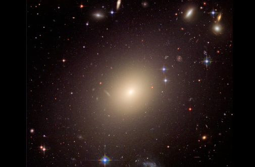

Introduction
From a homogeneous beginning, the formation of the first galaxies, the way galaxies change over time
Galaxy Merging
 It is senseless to doubt the exsistense of mergers in our universe as there are undeniable and famous ongoing galaxy
mergers in the nearby universe, such as the Antennae. Mergers might be uncommon, however, merging may be the primary
process by which galaxies gain mass, and this activity may be responsible for the evolution we observe in distant galaxies.
It is senseless to doubt the exsistense of mergers in our universe as there are undeniable and famous ongoing galaxy
mergers in the nearby universe, such as the Antennae. Mergers might be uncommon, however, merging may be the primary
process by which galaxies gain mass, and this activity may be responsible for the evolution we observe in distant galaxies.
Galaxy mergers have been hypothesised to:
- Stimulate star formation
- Black hole expansion,
- Formation of quasars
- and the primary cause of galaxy formation
Galaxy Formation, The Beginning
The origin of galaxy formation is hypothesized to occur due to tiny quantum fluctuations in the aftermath of the Big Bang. These fluctuations result clumping of matter in the early universe which followed by clustering and merging, allowed galaxies to accumulate mass, determining their shape and structure.
The earliest stage in the evolution of galaxies is their formation where generaly, it has a disk shape and is called a spiral galaxy due to spiral-like "arm" structures located on the disk. There are 2 major theories on how these disk-like distributions of stars develop from a cloud of matter.
Disk Galaxy formation theories
Top-down theories
Formation of disk galaxies form through a monolithic collapse of a large gas cloud. The distribution of matter in the early universe was in clumps that consisted mostly of dark matter. These clumps interacted gravitationally, putting tidal torques on each other that acted to give them some angular momentum. Matter then started forming into a tight disk which cools down and breaks into smaller clouds of gas which form stars. The dark matter remains distributed outside the disk in what is known as the dark halo.
This theory is quite simple yet no longer widely accepted.
Bottom-up theory
Matter started out in these “smaller” clumps (mass on the order of globular clusters), and then many of these clumps merged to form galaxies, which then were drawn by gravitation to form galaxy clusters. Models using this sort of process predict more small galaxies than large ones, which matches observations.
Astronomers do not currently know what process stops the contraction.
Fundamental Galaxy Types
Spiral
- Blue star-forming galaxies
- Spiral galaxies are quite thin, dense, and rotate relatively fast
Eliptical
- Red star-forming galaxies
- Stars in elliptical galaxies have randomly oriented orbits.
Elyptical Galaxies, The most Evolved Form?
Elliptical galaxies are among some of the largest known thus far. and they are started to being seen as some of the most evolved systems in the universe. Elliptical galaxies have central supermassive black holes, and the masses of these black holes correlate with the galaxy's mass.
It is widely accepted that the main driving force for the evolution of elliptical galaxies is mergers of smaller galaxies. If the galaxies are of similar size, the resultant galaxy will be elliptical. There are many types of galaxy mergers, which do not necessarily result in elliptical galaxies, but result in a structural change.
Galaxy quenching, The End?
The current rate of galaxy mergers does not explain how star formation ceases in galaxies. Theories of galaxy evolution must therefore be able to explain how star formation turns off in galaxies. This phenomenon is called galaxy "quenching".
A galaxy is quenched when it has no more cold gas for starformation. However, it is thought that quenching occurs relatively quickly (within 1 billion years), which is much shorter than the time it would take for a galaxy to simply use up its reservoir of cold gas. Galaxy evolution models explain this by hypothesizing other physical mechanisms that remove or shut off the supply of cold gas in a galaxy. These mechanisms can be broadly classified into two categories:
- Preventive feedback mechanisms that stop cold gas from entering a galaxy or stop it from producing stars
- Ejective feedback mechanisms that remove gas so that it cannot form stars.